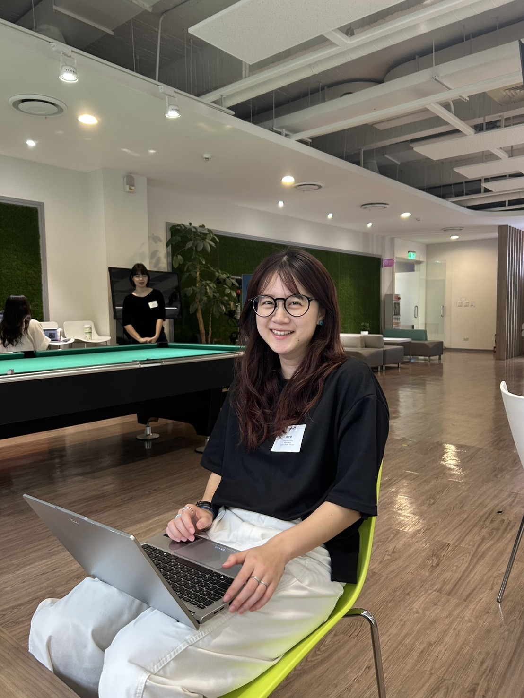
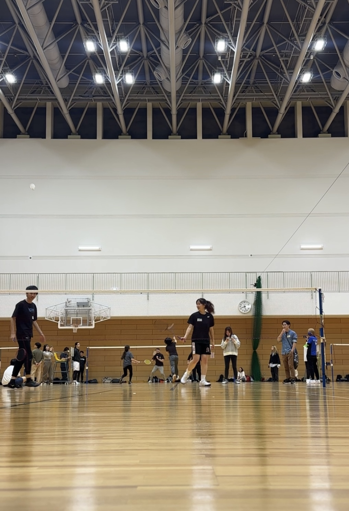
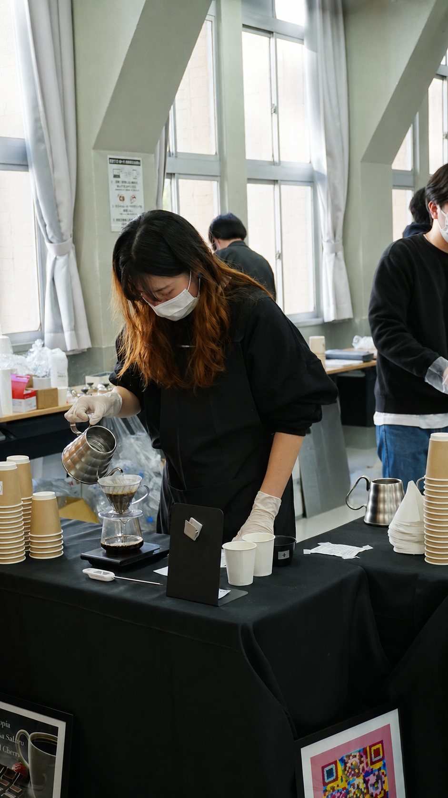
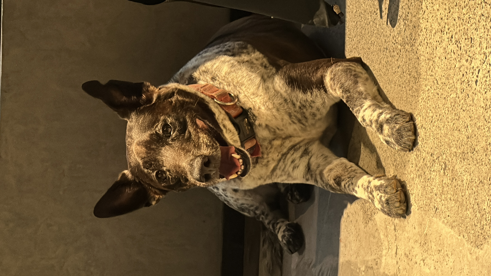

About

I'm Claire, a UX designer and HCI researcher who genuinely loves the moment a hard thing starts to make sense. I care deeply about human connection and education: the way people learn, the way they reach each other, and the quiet design decisions that make both easier or harder. My background crosses social sciences, interaction research, and engineering, which means I tend to approach new fields the same way I approach everything else, with the conviction that it's all figure-out-able.
B.S. — National Tsing Hua University, Taiwan (NTHU)
Social Sciences exchange — Waseda University, Tokyo
Grew up partly in the United States, ages 4 to 9.
Outside of work
01 / 05
run
Training for distance taught me that most limits are negotiated, not fixed.

rally
Playing since fifth grade. The sport that has followed me through every country.
wander
Happiest when I am somewhere unfamiliar, moving through it slowly on foot.

pouring
Coffee lover — tasting the nuances of each brew.

dogs
I don't have one. I am working on this problem.
If something I've built or written resonates, feel free to reach out! I am also looking for opportunities for HCI-related collaborations. Drop me an email and let's get some ice cream or coffee.